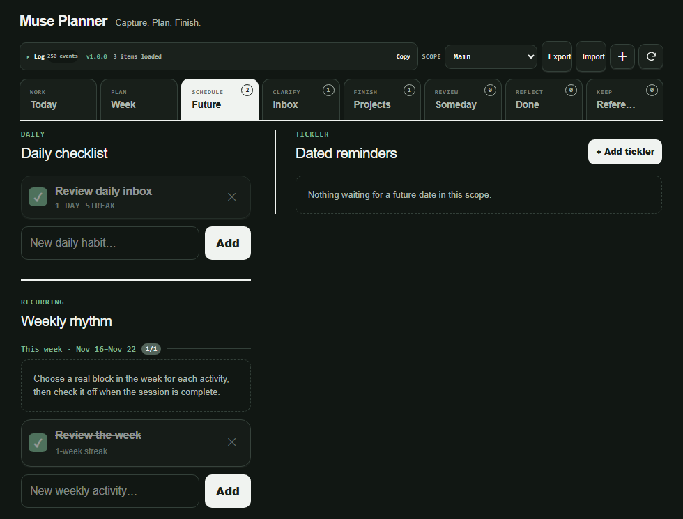

ORGANIZE
Muse Planner
Turn projects, goals and routines into a plan you can keep using.
Explore Planner ↗YOUR TOOLS. YOUR WAY.
Specialists, skills, workflows and Spaces for the way you build.
Build, debug, refactor and release software. From architecture and implementation through tested delivery.
Explore Muse Planner and its actual desktop and phone views, then set it up for your work.
Explore all Spaces →
Pick a useful app, follow its setup guide, and make it yours.
Turn projects, goals and routines into a plan you can keep using.
Explore Planner ↗Move ideas into work, track progress and return to what matters.
Explore Task Board ↗Give tasks and notes a simple home, then pick up where you left off.
Explore Daily Desk ↗Explore specialist kits for building, research, design, learning and more.
Showing 15 of 15 specialists
Download a kit or open its setup guideStart with a task
Build, debug, refactor and release software. Work from reproduction and architecture decisions through implementation, regression tests, source integrity and reviewed delivery.
Design and maintain reliable data systems, from schemas and ingestion quality to record identity, event reconciliation, query performance and safe migrations.
Build repeatable workflows across tools and services, with dependency graphs, triggers, approval points, idempotency, retry policy and uncertain-effect recovery.
Improve service reliability using SLOs, error budgets, capacity forecasts, incident investigation, recovery plans and evidence from real measurements.
Investigate scientific and technical questions, compare explanations, audit primary evidence and design controlled, held-out evaluations.
Resolve competing factual and technical claims by tracing original evidence, testing counterexamples, qualifying uncertainty and recording defensible conclusions.
Challenge authorized software, agent systems and releases with threat models, failure injection, negative controls and independent remediation reviews.
Understand software and protocol behavior with authorized observations, defensive trace analysis, scoped experiments and clean-room reconstructions.
Develop original visual media, animation, video and interactive scenes—from creative direction, characters, environments and asset development to motion, render inspection, continuity and delivery.
Design and evaluate complete product experiences: user research, information architecture, responsive layouts, interaction flows, accessibility and build-ready handoffs.
Design datasets, models and adapters, conduct training experiments, compare candidates on held-out data and preserve model, tokenizer and artifact provenance.
Build lessons, flashcards, practice sessions, scored quizzes and adaptive review from trusted study material, keeping learner progress and weak areas visible.
Support daily life with personal planning, routines, accessible interactions and privacy-aware assistance shaped to the owner's preferences.
Organize plants, growing seasons and gardening projects through observations, evidence-aware care guidance, planting plans and owner-managed schedules.
Turn complex goals into scoped work across specialists: sequence dependencies, manage owner approvals and resources, recover interrupted work and verify handoffs.
Try another term or clear the filters.
Every specialist has its own complete ZIP. Download all 15 specialists, or browse skills and workflows to add to your kit.
Browse practical skills, proven workflows, task starters and setup guides for whatever you're building.
Choose a specialist, open its kit, and start the task that matters to you.
Pick the discipline that matches your work, then download its ZIP.
Unzip the download and open START_HERE.md. Your profile, subchat guides, skills and examples are together in one folder.
Follow the kit’s instructions to add the profile to Muse, set up its focused subchats, and try the included starter task.
Choose a role to get its ZIP and setup instructions.
The download includes everything listed in the specialist’s setup guide.
Choose a specialist above to download its kit. You can also read the general installation guide.
Unzip the kit and open START_HERE.md.
Already using Muse from a terminal? Open the terminal guide.